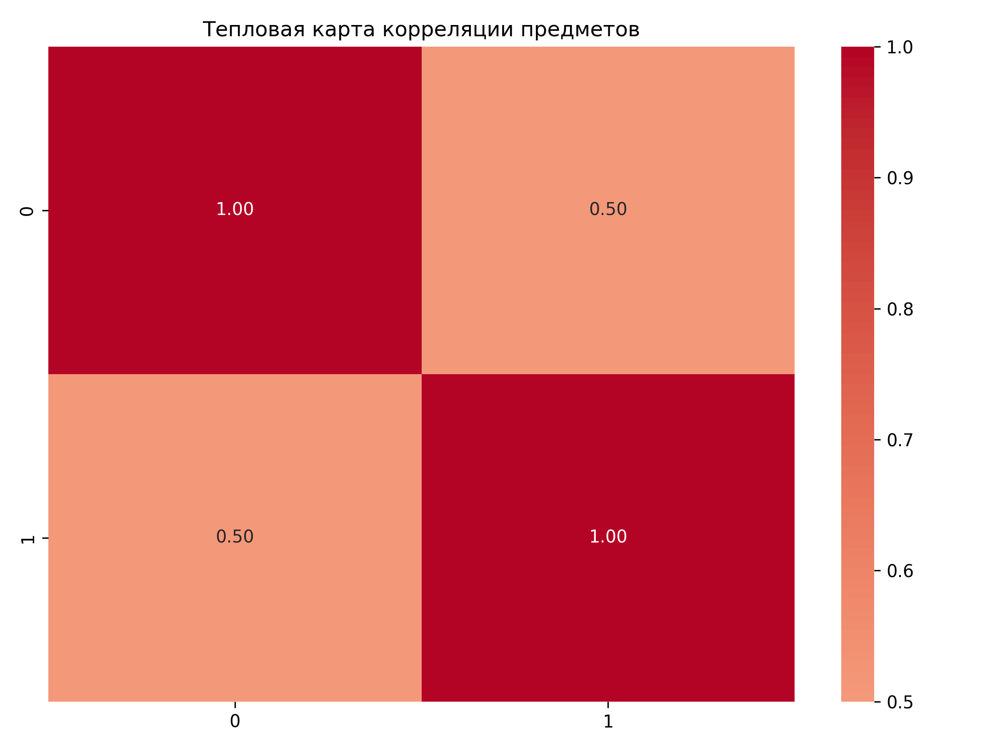
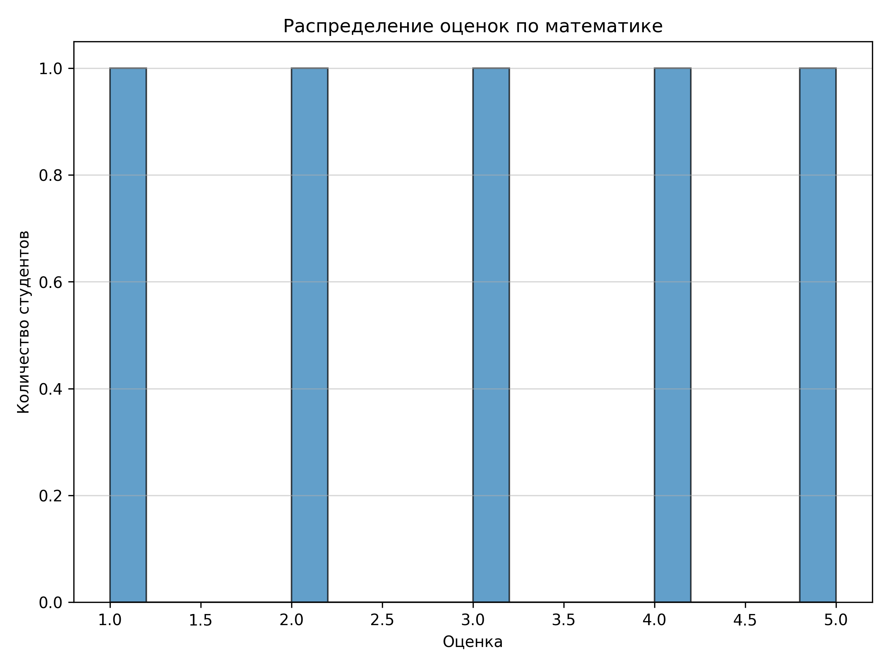
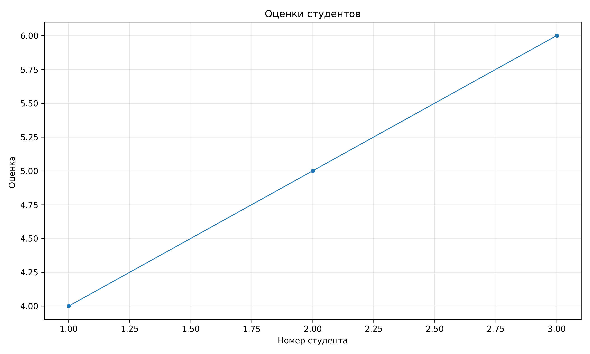

Лабораторная работа №2: Основы NumPy: массивы и векторные операции
Цель работы
Освоить основы работы с библиотекой NumPy для численных вычислений в Python
Задание
Необходимо было разработать модуль на Python для обработки данных, который включает:
- Создание массивов
- Векторные операции
- Матричные операции
- Статистический анализ
- Визуализация
Структура проекта
- feb602itmo
- numpy_lab
- main.py
- tests.py
- plots
- numpy_lab
Реализация
Файл main.pyl:
"""
Модуль для работы с массивами NumPy и для визуализации данных.
Включает функции для:
- Создания и обработки массивов
- Векторных операций
- Матричных операций
- Статистического анализа
- Визуализации данных
"""
import os
import numpy as np
import pandas as pd
import matplotlib
matplotlib.use('Agg')
import matplotlib.pyplot as plt
import seaborn as sns
# ============================================================
# 1. СОЗДАНИЕ И ОБРАБОТКА МАССИВОВ
# ============================================================
def create_vector():
"""
Создать массив от 0 до 9.
Returns:
numpy.ndarray: Массив чисел от 0 до 9 включительно
"""
return np.arange(10)
def create_matrix():
"""
Создать матрицу 5x5 со случайными числами [0,1].
Returns:
numpy.ndarray: Матрица 5x5 со случайными значениями от 0 до 1
"""
return np.random.rand(5, 5)
def reshape_vector(vec):
"""
Преобразовать (10,) -> (2,5)
Args:
vec (numpy.ndarray): Входной массив формы (10,)
Returns:
numpy.ndarray: Преобразованный массив формы (2, 5)
"""
return vec.reshape(2, 5)
def transpose_matrix(mat):
"""
Транспонирование матрицы.
Args:
mat (numpy.ndarray): Входная матрица
Returns:
numpy.ndarray: Транспонированная матрица
"""
return mat.T
# ============================================================
# 2. ВЕКТОРНЫЕ ОПЕРАЦИИ
# ============================================================
def vector_add(a, b):
"""
Сложение векторов одинаковой длины.
(Векторизация без циклов)
Args:
a (numpy.ndarray): Первый вектор
b (numpy.ndarray): Второй вектор
Returns:
numpy.ndarray: Результат поэлементного сложения
"""
return a + b
def scalar_multiply(vec, scalar):
"""
Умножение вектора на число.
Args:
vec (numpy.ndarray): Входной вектор
scalar (float/int): Число для умножения
Returns:
numpy.ndarray: Результат умножения вектора на скаляр
"""
return vec * scalar
def elementwise_multiply(a, b):
"""
Поэлементное умножение.
Args:
a (numpy.ndarray): Первый вектор/матрица
b (numpy.ndarray): Второй вектор/матрица
Returns:
numpy.ndarray: Результат поэлементного умножения
"""
return a * b
def dot_product(a, b):
"""
Скалярное произведение.
Args:
a (numpy.ndarray): Первый вектор
b (numpy.ndarray): Второй вектор
Returns:
float: Скалярное произведение векторов
"""
return np.dot(a, b)
# ============================================================
# 3. МАТРИЧНЫЕ ОПЕРАЦИИ
# ============================================================
def matrix_multiply(a, b):
"""
Умножение матриц.
Args:
a (numpy.ndarray): Первая матрица
b (numpy.ndarray): Вторая матрица
Returns:
numpy.ndarray: Результат умножения матриц
"""
return a @ b
def matrix_determinant(a):
"""
Определитель матрицы.
Args:
a (numpy.ndarray): Квадратная матрица
Returns:
float: Определитель матрицы
"""
return np.linalg.det(a)
def matrix_inverse(a):
"""
Обратная матрица.
Args:
a (numpy.ndarray): Квадратная матрица
Returns:
numpy.ndarray: Обратная матрица
"""
return np.linalg.inv(a)
def solve_linear_system(a, b):
"""
Решить систему Ax = b
Args:
a (numpy.ndarray): Матрица коэффициентов A
b (numpy.ndarray): Вектор свободных членов b
Returns:
numpy.ndarray: Решение системы x
"""
return np.linalg.solve(a, b)
# ============================================================
# 4. СТАТИСТИЧЕСКИЙ АНАЛИЗ
# ============================================================
def load_dataset(path="data/students_scores.csv"):
"""
Загрузить CSV и вернуть NumPy массив.
Args:
path (str): Путь к CSV файлу
Returns:
numpy.ndarray: Загруженные данные в виде массива
"""
return pd.read_csv(path).to_numpy()
def statistical_analysis(data):
"""
Представьте, что данные — это результаты экзамена по математике.
Нужно оценить:
- средний балл
- медиану
- стандартное отклонение
- минимум
- максимум
- 25 и 75 перцентили
Args:
data (numpy.ndarray): Одномерный массив данных
Returns:
dict: Словарь со статистическими показателями
"""
return {
'mean': np.mean(data),
'median': np.median(data),
'std': np.std(data),
'min': np.min(data),
'max': np.max(data),
'percentile_25': np.percentile(data, 25),
'percentile_75': np.percentile(data, 75)
}
def normalize_data(data):
"""
Min-Max нормализация.
Формула: (x - min) / (max - min)
Args:
data (numpy.ndarray): Входной массив данных
Returns:
numpy.ndarray: Нормализованный массив данных в диапазоне [0, 1]
"""
min_val = np.min(data)
max_val = np.max(data)
return (data - min_val) / (max_val - min_val)
# ============================================================
# 5. ВИЗУАЛИЗАЦИЯ
# ============================================================
def plot_histogram(data):
"""
Построить гистограмму распределения оценок по математике.
Args:
data (numpy.ndarray): Данные для гистограммы
"""
plt.figure(figsize=(8, 6))
plt.hist(data, bins=20, edgecolor='black', alpha=0.7)
plt.title('Распределение оценок по математике')
plt.xlabel('Оценка')
plt.ylabel('Количество студентов')
plt.grid(axis='y', alpha=0.5)
plt.tight_layout()
plt.savefig('code/numpy_lab/plots/histogram.png', dpi=300)
plt.close()
def plot_heatmap(matrix):
"""
Построить тепловую карту корреляции предметов.
Args:
matrix (numpy.ndarray): Матрица корреляции
"""
plt.figure(figsize=(8, 6))
sns.heatmap(matrix, annot=True, fmt='.2f', cmap='coolwarm', center=0)
plt.title('Тепловая карта корреляции предметов')
plt.tight_layout()
plt.savefig('code/numpy_lab/plots/heatmap.png', dpi=300)
plt.close()
def plot_line(x, y):
"""
Построить график зависимости: студент -> оценка по математике.
Args:
x (numpy.ndarray): Номера студентов
y (numpy.ndarray): Оценки студентов
"""
plt.figure(figsize=(10, 6))
plt.plot(x, y, marker='o', linestyle='-', linewidth=1, markersize=4)
plt.title('Оценки студентов')
plt.xlabel('Номер студента')
plt.ylabel('Оценка ')
plt.grid(True, alpha=0.3)
plt.tight_layout()
plt.savefig('code/numpy_lab/plots/line_plot.png', dpi=300)
plt.close()
Визуализация
Гистограмма (plot_histogram)

Тепловая карта (plot_heatmap)

Линейный график (plot_line)

Нюансы и возникшие сложности
Возникшая проблема
В модуле визуализации использовался matplotlib.pyplot, который по умолчанию применяет бэкенд TkAgg. ОН требует наличия интерфейса GUI и библиотек Tcl/Tk. Но тесты запускаются через pytest в консольном режиме, где интерфейс недоступен. В результате тесты №15, 16 и 17 (test_plot_histogram, test_plot_heatmap, test_plot_line) проваливались.
Решение
С помощью matplotlib.use('Agg') я изменила стоящий по умолчанию TkAgg на Agg, который рендерит в память.